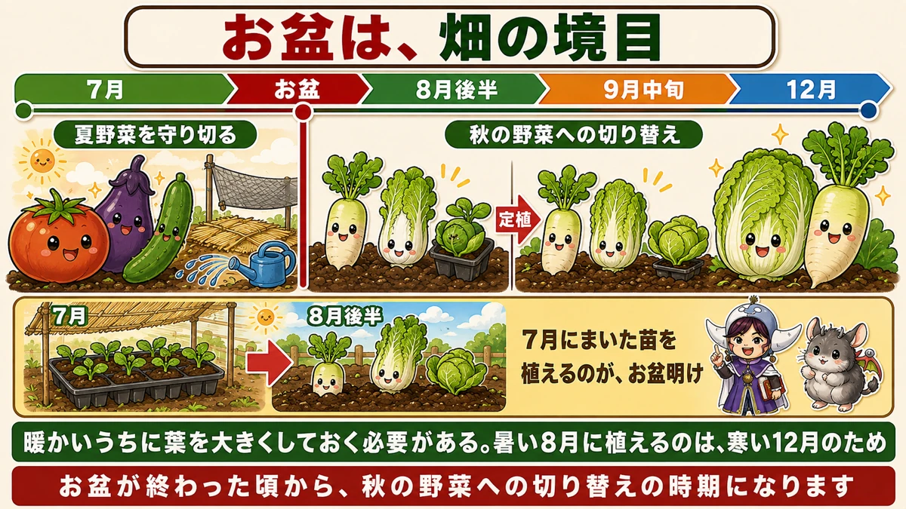
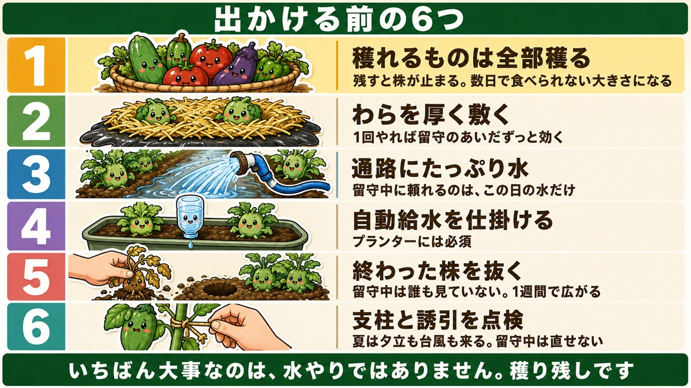
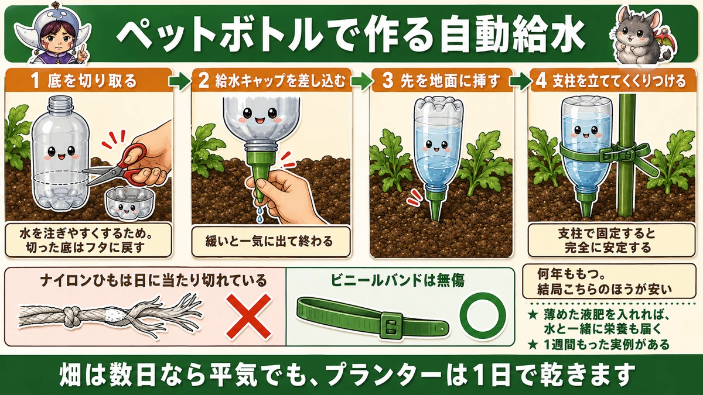
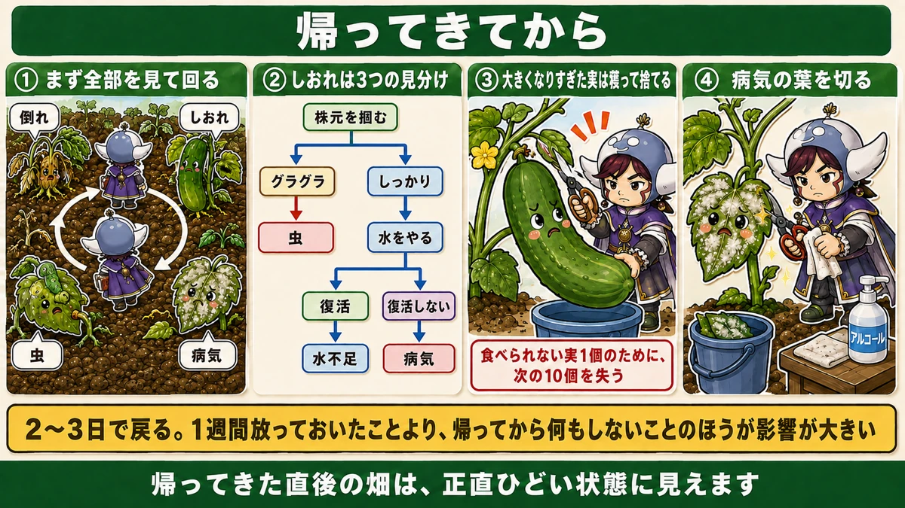

出かける前に、穫れるものは全部穫ってください🏖️ 残すと株が止まります

🗨️「帰省するけど、畑はどうしよう」
🗨️「1週間空けたら、全部だめになっていた」
🗨️「水やりだけ誰かに頼めばいいのかな」
どうも、8150（えいこう）です🌱 家庭菜園歴8年、理科の教員免許を持っていて、有機・無農薬で野菜を育てています。
もうすぐお盆です。帰省や旅行で、数日から1週間、家を空ける方も多いと思います。
先に、この記事でいちばん言いたいことを言っておきます。
★出かける前に、穫れるものは全部穫ってください。
★いちばん大事なのは、水やりではありません。穫り残しです☺️
★★お盆は、畑の境目です
前半と後半で、性格が変わります
まず、この時期の位置づけからお話しします。
★お盆は、家庭菜園の境目です。

★お盆まで … 夏野菜を守り切る時期
猛暑から株を守って、収穫を続ける。ここまでは前回までにお話ししてきたとおりです。
★お盆が終わってから … 秋の野菜への切り替え
ここから、畑の主役が入れ替わります。
★8月後半から、秋冬野菜が始まります
具体的な日程です。
★大根、白菜、キャベツ。これらの開始時期は、8月後半から9月中旬です。
「まだ暑いのに？」と思いますよね。★でも、これには理由があります。
★暖かいうちに、葉を大きくする
冬野菜は、★植えるタイミングがとても大事です。
理由は、★暖かい時期のうちに葉を大きくしておく必要があるからです。
寒くなってからでは、株が大きくなりません。★葉が小さいまま冬に入ると、白菜は巻かないし、大根も太りません。
★暑い8月に植えるのは、寒い12月のためです。
7月にまいた苗が、ここで出番です
前回、7月に秋冬野菜の育苗を始める話をしました。
★涼しい日陰でタネをまいて、苗を育てる。
★その苗を植えるのが、まさにお盆明けです。7月の作業と8月の作業が、ここでつながります。
★留守にする前の、6つ

1. ★★穫れるものは、全部穫る
これがいちばん大事です。
★少し早くても、全部穫ってください。
理由は2つあります。
★理由①：残すと、株が止まります
前にお話ししたとおりです。★実を残すと、株は「もう子孫を残せた」と判断して、次の花を咲かせません。
★1週間実を残したら、その1週間ぶん、次の収穫が遅れます。
★理由②：大きくなりすぎて、食べられません
きゅうり、オクラ、ズッキーニ。★これらは数日で食べられない大きさになります。
オクラは★2〜3日でかたくなります。1週間空ければ、まず食べられません。
★どうせ食べられないなら、小さいうちに穫るほうが得です。
2. ★わらを厚く敷く
前に猛暑対策でお話しした作業です。★留守にする前は、いつもより厚めに敷いてください。
- ★地温を下げる
- ★水の蒸発を減らす
- ★泥はねを防ぐ
★1回やれば、留守のあいだずっと効きます。手をかけられない期間にこそ、向いている作業です。
3. ★通路に、たっぷり水
出かける当日の朝に、たっぷりやっておきます。
★株元ではなく、通路です。
前にお話ししたとおり、★根の先端は通路にあります。そして★1か所10分ほど、水がたまるくらい。
★留守中に頼れるのは、この日にやった水だけです。いつもより多めに。
4. ★自動給水を仕掛ける
★プランターには、必須です。次の章でくわしくお話しします。
5. ★終わった株を抜いておく
前に6月号でお伝えしました。★収穫が終わった株は、うどんこ病の巣になります。
★留守のあいだは、誰も見ていません。1週間あれば、隣の株まで広がります。
★出かける前に抜いておく。これは効きます。
6. ★支柱と誘引を、点検する
最後に、風の対策です。
★夏は夕立も台風も来ます。そして留守中は直せません。
- ★ゆるくなった結び目を締め直す
- ★きつくなった結び目をゆるめる
- ★倒れそうな株に支柱を足す
前にお話ししたとおり、★株側はゆるく、支柱側はきつく。この点検だけしておいてください。
★★プランターが、いちばん危ない
畑とは、条件が違います
ここははっきりお伝えします。
★畑は数日なら平気でも、プランターは1日で乾きます。
前に水やりの話をしたとき、こうお伝えしました。
- ★プランターは土の量が限られている
- ★根が外へ逃げられない
- ★底から水が抜けていく
★畑のように「下のほうに水が残っている」ということがありません。
★だから、給水はプランターから
対策の優先順位も、そこで決まります。
★自動給水を仕掛けるなら、まずプランターに。
畑の株は、わらを敷いて水をやっておけば、数日は耐えます。★プランターは耐えません。
★★ペットボトルで作る、自動給水装置
1週間もちます
私が知った中でいちばん実用的だったのが、これです。
★ペットボトルを使った自動給水装置。★1週間、自動給水できたという実例があります。

作り方、4手順
★1. ペットボトルの底を切り取る
底をぐるっと切って、外します。
なぜかというと、★水を注ぎやすくするためです。口から入れるのは大変ですが、底が開いていれば上から一気に入ります。
★切り取った底は、フタとして戻します。ゴミやボウフラが入るのを防げます。
★2. 給水キャップを差し込む
口の部分に、★ポタポタと水が落ちるタイプの給水キャップを付けます。園芸店にあります。
★水漏れしないように、しっかり差し込んでください。ここが緩いと、一気に出て終わります。
★3. 先を地面に突き刺す
キャップの先が細くなっているので、★そのまま土に挿します。
★4. 支柱を立てて、くくりつける
★これが大事です。
土に挿しただけでは、風で倒れます。★横に支柱を1本立てて、ペットボトルをくくりつけてください。
★支柱で固定すると、完全に安定します。
★★しばるのは、ビニールバンドで
小さいことですが、効きます。
★ナイロンひもより、ビニールバンドをおすすめします。
理由は★耐久性です。★何年ももちます。
ナイロンひもは日に当たると劣化して、1シーズンで切れます。★結局、ビニールバンドのほうが安く済みます。
そして★他の場面でも使えます。トンネル、雨よけ、防虫ネットの固定。★1つ買っておくと、あちこちで出番があります。
液肥にも使えます
もうひとつ、応用があります。
★薄めた液肥を入れておけば、少しずつ与え続けられます。
留守のあいだ、水と一緒に栄養も届く。★何日も家を空けるときには、これが効きます。
帰ってきてから

1. ★まず、全部を見て回る
荷物を置いたら、まず畑を一周してください。
見るのはこの4つです。
- ★倒れている株はないか
- ★しおれている株はないか
- ★虫がついていないか
- ★病気が出ていないか
★1週間分の変化が一度に来ます。順番に片づけていきます。
2. ★しおれていたら、3つの見分け
前にお話しした手順です。
★①株元を掴んで揺らす → グラグラなら虫
★②しっかりしていたら、水をやる
★③復活すれば水不足。復活しなければ病気
★3手で原因が決まります。慌てて全部に水をやる前に、これをやってください。
3. ★大きくなりすぎた実は、穫って捨てる
つらい作業ですが、必要です。
★食べられない大きさになった実も、株から外してください。
もったいなく感じます。でも★残しておくと、株は止まったままです。
★食べられない実1個のために、次の10個を失う。ここは割り切ってください。
4. ★病気の葉を切る
うどんこ病が出ていたら、★その葉をハサミで切ります。
★留守のあいだに広がっていることが多いです。前にお伝えしたとおり、★白くなった葉は残しても働きません。
そして★ハサミは株ごとに除菌してください。
★2〜3日で、戻ります
帰ってきた直後の畑は、正直ひどい状態に見えます。私も毎回そう思います。
でも★穫って、切って、水をやれば、2〜3日で戻ります。
★1週間放っておいたことより、帰ってから何もしないことのほうが、ずっと影響が大きいです。
出かける前の、30分
この記事の要点
- ★★出かける前に、穫れるものは全部穫る。★いちばん大事なのは水やりではない
- ★実を残すと株が止まり、次の花が咲かない
- ★きゅうり・オクラ・ズッキーニは数日で食べられない大きさになる
- ★オクラは2〜3日でかたくなる
- ★★お盆は家庭菜園の境目。★お盆明けから秋の野菜への切り替え
- ★大根・白菜・キャベツは8月後半から9月中旬に開始
- ★暖かいうちに葉を大きくする必要がある。★暑い8月に植えるのは、寒い12月のため
- ★7月にまいた苗を植えるのが、お盆明け
- 出かける前の6つ＝★収穫／★わらを厚く／★通路に水／★自動給水／★終わった株を抜く／★支柱の点検
- ★わらは1回やれば留守のあいだずっと効く
- ★留守中に頼れるのは、出かける日にやった水だけ
- ★★プランターがいちばん危ない。★畑は数日平気でも、プランターは1日で乾く
- ★自動給水は、まずプランターに
- ペットボトル給水器の作り方＝★①底を切る（水を注ぎやすく・切った底はフタに）★②給水キャップをしっかり差し込む ★③先を地面に挿す ★④支柱を立ててくくりつける
- ★支柱で固定すると完全に安定する
- ★★しばるのはナイロンひもよりビニールバンド。★何年ももち、結局安い
- ★薄めた液肥を入れれば、水と一緒に栄養も届く
- 帰ったら★①全部見て回る ★②しおれは3つの見分け ★③大きくなりすぎた実は穫って捨てる ★④病気の葉を切る
- ★食べられない実1個のために、次の10個を失う
- ★2〜3日で戻る。★帰ってから何もしないことのほうが影響が大きい
全部やろうとしなくて大丈夫です。まずは出かける前の30分で、★穫れるものを全部穫ってください。それだけで、帰ってきたときの畑がまるで違います🏖️
次回は、秋冬野菜の土づくりの話。真夏の太陽を使って、土を消毒する方法をお話しします☀️
ここまで読んでくださって、ありがとうございました。
収穫メッシュバッグ
出かける前に、穫れるものは全部穫ります。残すと株が止まります。


給水式プランター
いちばん危ないのはプランターです。底に水をためられるものなら数日もちます。
![[商品価格に関しましては、リンクが作成された時点と現時点で情報が変更されている場合がございます。]](https://hbb.afl.rakuten.co.jp/hgb/56d750eb.4adaaa3a.56d750ec.674e1165/?me_id=1203559&item_id=10121847&pc=https%3A%2F%2Fthumbnail.image.rakuten.co.jp%2F%400_mall%2Fyminfo%2Fcabinet%2F00045323%2F811029.jpg%3F_ex%3D240x240&s=240x240&t=picttext "[商品価格に関しましては、リンクが作成された時点と現時点で情報が変更されている場合がございます。]")
日よけ・遮光ネット
留守のあいだだけかけておくと、乾きがかなり違います。
![[商品価格に関しましては、リンクが作成された時点と現時点で情報が変更されている場合がございます。]](https://hbb.afl.rakuten.co.jp/hgb/565b708e.e3f248ff.565b708f.4c3ea46d/?me_id=1194418&item_id=10631677&pc=https%3A%2F%2Fthumbnail.image.rakuten.co.jp%2F%400_mall%2Fminatodenk%2Fcabinet%2Ffs%2F0109%2Ffs-0117352.jpg%3F_ex%3D240x240&s=240x240&t=picttext "[商品価格に関しましては、リンクが作成された時点と現時点で情報が変更されている場合がございます。]")
敷きわら
株元を覆っておくだけで、土の水もちが変わります。
![[商品価格に関しましては、リンクが作成された時点と現時点で情報が変更されている場合がございます。]](https://hbb.afl.rakuten.co.jp/hgb/56bc2fb2.ff40a6e6.56bc2fb3.618f6a70/?me_id=1257026&item_id=10000211&pc=https%3A%2F%2Fthumbnail.image.rakuten.co.jp%2F%400_mall%2Fsharuka%2Fcabinet%2F09042254%2Fimgrc0081094692.jpg%3F_ex%3D240x240&s=240x240&t=picttext "[商品価格に関しましては、リンクが作成された時点と現時点で情報が変更されている場合がございます。]")
あわせて読みたい